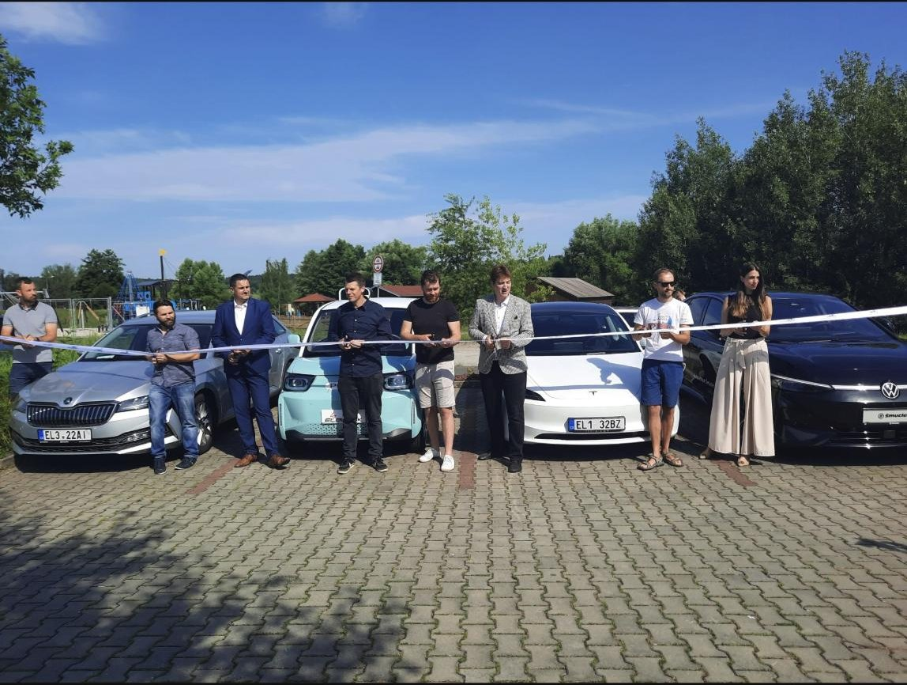

Konkrétní projekty, které jsme od roku 2022 v Plzni 3 dotáhli do konce — a na kterých právě pracujeme.
Na lepší zázemí čekali skvrňanští dobrovolní hasiči zhruba dvacet let. Dosavadní hasičská zbrojnice už jim prostorově dávno nestačila, navíc potřebovala minimálně celou řadu oprav. Nyní se dočkali.
Rychlost vozidel i povolení kamionů k průjezdu nově v Radobyčicích hlídá radar — na přání samotných občanů.

Novou nabíjecí stanici pro elektromobily uvedl do provozu třetí městský obvod.
V červeném pavilonu 55. MŠ v Plzni jsme nechali opravit schodiště i podesty a v kuchyni vyměnili dosluhující vzduchotechniku. Dětem i zaměstnancům bude už od srpna příjemněji.
Po třech měsících prací je zkapacitnění parkování v části Boettingerovy ulice u dětského centra hotové — přibylo osm nových míst. Využít je můžou místní i návštěvníci oblíbeného Dětského Aqua Clubu Hobit.
V roce 2026 startuje revitalizace veřejného prostranství za Albertem — podíl zeleně vzroste ze 7 % na 75 %, přibudou opatření pro hospodaření s dešťovou vodou, odpočinkové terasy, cestičky i prostor pro stánky s občerstvením. Investice 30 mil. Kč (20 mil. v roce 2026, 10 mil. v roce 2027), dokončení 2027.
Podél hřbitova na Domažlické roste nový chodník, který propojí stávající úseky a usnadní cestu místním, návštěvníkům hřbitova i vozíčkářům. Součástí je i zatravnění okolí — stromy zůstanou zachované. Současně se opravuje přístupový chodník na Křimické.
Od 1. června 2026 se staví moderní dřevostavba pro 72 dětí ve 3 třídách, s vlastní kuchyní, zelenou střechou a kruhovým atriem. Valcha na vlastní školku čekala roky — první děti nastoupí v září 2028.
Nová kavárna vznikla v revitalizovaném prostoru a byla nominována na cenu Stavba roku Plzeňského kraje — ocenění kvality veřejné investice, ne jen líbivá stavba.
Postupně jsme v obvodu přidali přes 140 nových parkovacích míst tam, kde to lidé nejvíc potřebovali — od sídlišť po okolí škol a služeb.
Souběžně jsme zmodernizovali tři mateřské školy v obvodu — opravy interiérů, vzduchotechniky i venkovních prostor, aby dětem i personálu bylo lépe.
Obyvatelé Plzně 3 mohli sami navrhnout a odhlasovat projekty do svého okolí. Participativní rozpočet dává lidem přímý vliv na to, jak vypadá jejich čtvrť.
Nechali jsme zpracovat ucelenou koncepci dalšího rozvoje Škodalandu, aby další investice do lokality — od dopravy po zeleň — daly dohromady smysl.
Připravujeme řešení parkování v ulici T. Brzkové — jedné z lokalit, kde nedostatek míst dlouhodobě trápí místní obyvatele.
Vedle Valchy plánujeme i zcela novou mateřskou školu na Borech, aby obvod držel krok s rostoucí poptávkou po místech ve školkách.
Ozvěte se — problémy se řeší nejlépe, když o nich vím včas.